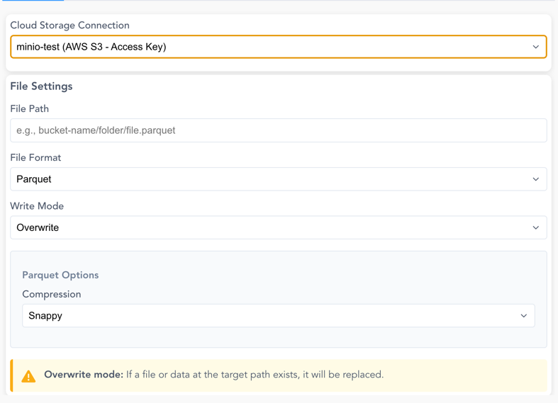

Output Nodes
Output nodes represent the final steps in your data pipeline, allowing you to save your transformed data or explore it visually. These nodes help you deliver your results in the desired format or analyze them directly.
Node Details
Node Details
Write Data
The Write Data node allows you to save your processed data in different formats. It supports CSV, Excel, and Parquet, each with specific configuration options.
Supported Formats
- CSV files (
.csv) - Excel files (
.xlsx) - Parquet files (
.parquet)
Usage
- Configure the output file path.
- Select the file format.
- Set writing options (e.g., delimiter, compression).
CSV
When a CSV file is selected, the following setup options are available:
| Parameter | Description |
|---|---|
| Delimiter | Specifies the character used to separate values (default: ,). |
| Encoding | Defines the file encoding (default: UTF-8). |
| Write Mode | Determines how the file is saved (overwrite, new file or append). |
Excel
When an Excel file is selected, additional configurations allow customizing the output.
| Parameter | Description |
|---|---|
| Sheet Name | Name of the sheet where data will be written (default: Sheet1). |
| Write Mode | Determines how the file is saved (overwrite or new file). |
Parquet
When a Parquet file is selected, no additional setup options are required. Parquet is a columnar storage format, optimized for efficient reading and writing.
| Parameter | Description |
|---|---|
| Write Mode | Determines how the file is saved (overwrite or new file). |
General Configuration Options
| Parameter | Description |
|---|---|
| File Path | Directory and filename for the output file. |
| File Format | Selects the output format (CSV, Excel, Parquet). |
| Overwrite Mode | Controls whether to replace or append data. When new file is selected it will throw an error when the file already exists |
This node ensures that your transformed data is saved in the correct format, ready for further use or analysis.
Cloud Storage Writer
The Cloud Storage Writer node allows you to save your processed data directly to cloud storage services like AWS S3.
Screenshot: Cloud Storage Writer Configuration

Connection Options:
- Use existing cloud storage connections configured in your workspace (see Manage Cloud Connections)
- Use local AWS CLI credentials or environment variables for authentication
File Settings:
| Parameter | Description |
|---|---|
| File Path | Full path including bucket/container and file name (e.g., bucket-name/folder/output.parquet) |
| File Format | Supported formats: CSV, Parquet, JSON, Delta Lake |
| Write Mode | overwrite (replace existing) or append (Delta Lake only) |
Format-Specific Options:
CSV Options:
- Delimiter: Character to separate values (default: ,)
- Encoding: File encoding (UTF-8 or UTF-8 Lossy)
Parquet Options: - Compression: Choose from Snappy (default), Gzip, Brotli, LZ4, or Zstd
Delta Lake Options:
- Supports both overwrite and append write modes
- Automatically handles schema evolution when appending
Overwrite Mode
When using overwrite mode, any existing file or data at the target path will be replaced. Make sure to verify the path before executing.
Append Mode
Available only for Delta Lake format.
Explore Data
The Explore Data node provides interactive data exploration and analysis capabilities.